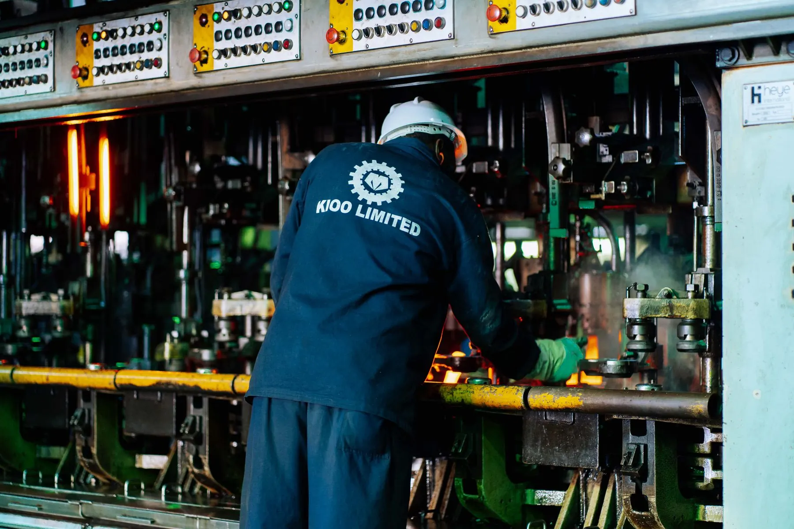
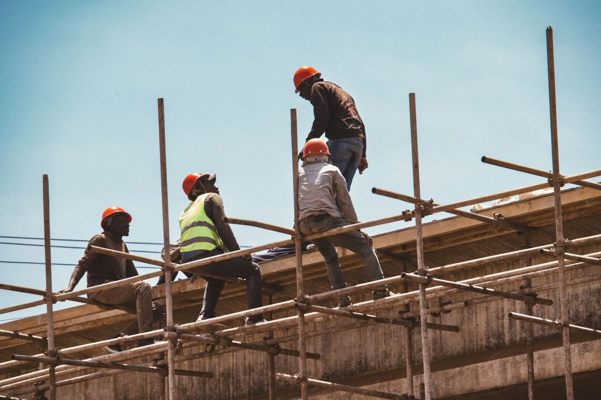
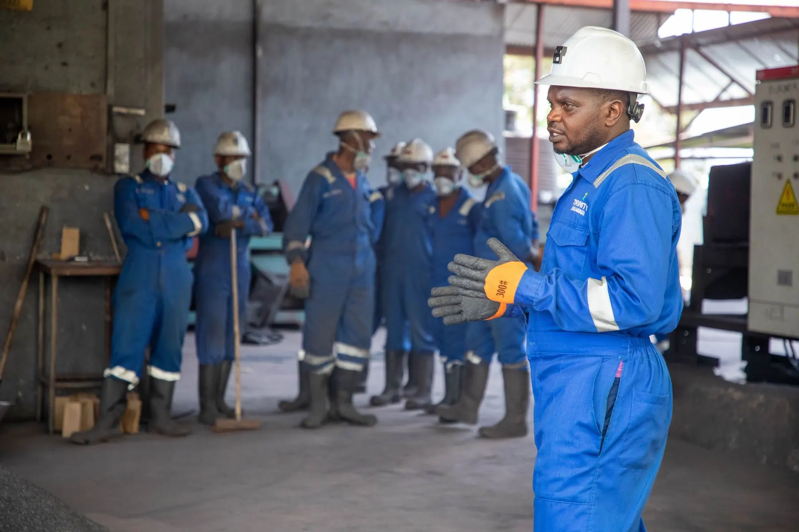
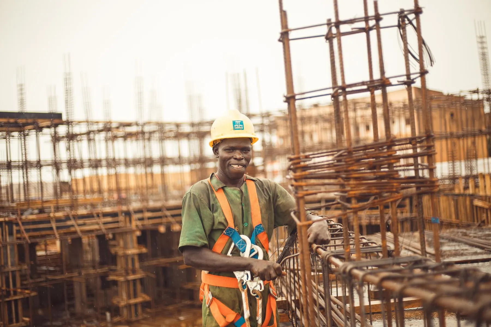
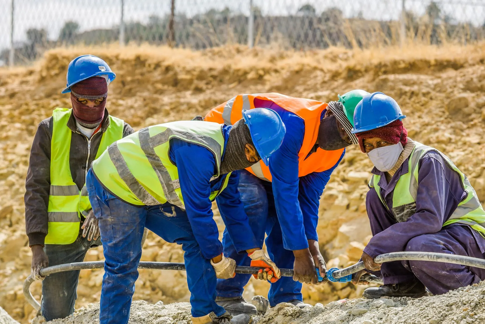
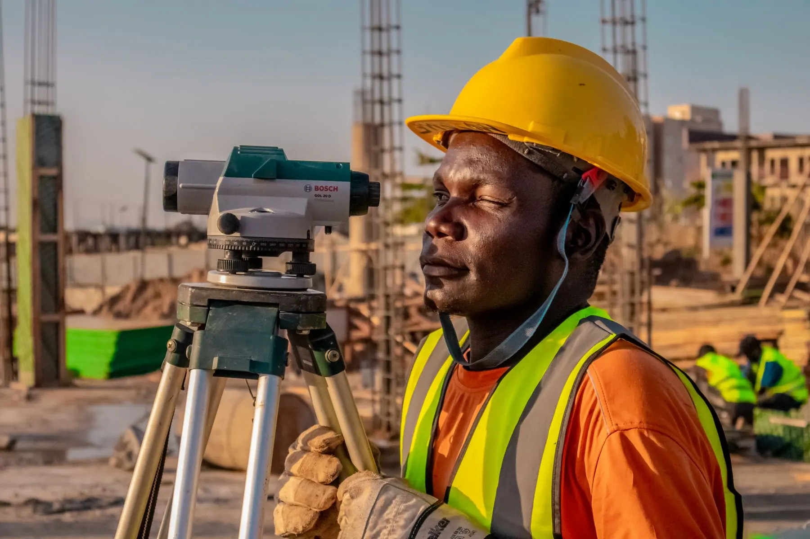
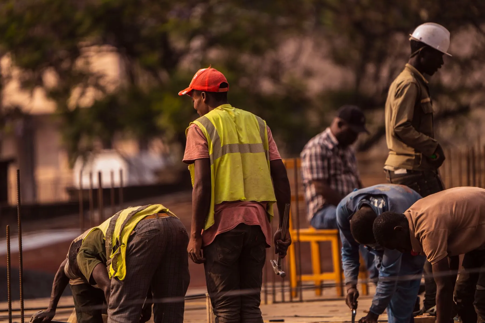

Practical Mechanical Expertise
GIMDO's public CRB category is mechanical. As a Class 4 contractor, we deliver professional mechanical engineering services within our verified scope, including HVAC systems, plumbing installations, fire protection systems, and industrial mechanical works across Tanzania. Our services are designed to support the construction and infrastructure development needs of Tanzania's growing economy, from commercial building projects to industrial facilities and residential developments.


Mechanical Contracting Excellence
As a CRB-registered Class 4 mechanical contractor (Registration M4/91/04/2026), GIMDO Engineering Works Limited specializes in delivering quality mechanical engineering solutions across Tanzania's construction sector. Our services align with our official registration category, ensuring we deliver services within our verified scope of expertise. According to the Contractors Registration Board classification system, mechanical contractors are authorized to undertake construction works related to mechanical engineering disciplines, which includes installation, maintenance, and repair of mechanical systems in buildings, industrial facilities, and infrastructure projects.
Our Class 4 rating indicates our capacity to handle projects of significant scale and complexity. The CRB classification system categorizes contractors based on their technical competence, financial capacity, and experience, with Class 4 representing a mid-tier classification that enables us to undertake mechanical engineering projects of considerable scope while maintaining the quality and reliability that our clients expect. This commitment to transparency means you can engage with confidence, knowing our services match our certified qualifications. We do not overstate our capabilities beyond what is officially recorded in the CRB registry.
Mechanical Engineering Services
Professional mechanical contracting services delivered with expertise, reliability, and commitment to quality standards within our CRB-authorized scope. Our comprehensive service offerings are designed to meet the diverse mechanical engineering needs of clients across Tanzania's construction and industrial sectors.
Mechanical Installation
Professional installation of mechanical systems and equipment including HVAC systems, plumbing infrastructure, and mechanical plant equipment with attention to technical specifications and safety requirements in compliance with Tanzanian building codes. Our installation services cover complete system integration from design consultation through installation, testing, commissioning, and handover, ensuring that mechanical systems operate efficiently and reliably throughout their lifecycle.
Maintenance Services
Ongoing maintenance and support for mechanical systems to ensure optimal performance and longevity of installed equipment. Regular servicing, troubleshooting, and repair of HVAC, plumbing, and mechanical systems for commercial and industrial facilities. Our maintenance programs are designed to prevent breakdowns, extend equipment life, and ensure that mechanical systems continue to operate at peak efficiency, reducing energy costs and minimizing downtime for our clients.
Construction Support
Supporting construction projects with skilled mechanical workforce and technical expertise for infrastructure development. Integration of mechanical systems into new building projects and renovation works across Tanzania. We work closely with general contractors, architects, and engineers to ensure seamless integration of mechanical systems into overall building design, providing timely delivery, quality workmanship, and adherence to project schedules and budget requirements.
Project Planning
Collaborative project planning to ensure mechanical requirements are integrated seamlessly into overall construction objectives. Technical consultation, system design coordination, and scheduling to ensure smooth project execution. Our planning services include detailed technical assessment, value engineering recommendations, procurement planning, and coordination with other trades to ensure that mechanical systems are installed efficiently and cost-effectively.
Quality Assurance
Commitment to quality standards and regulatory compliance in all mechanical contracting activities. Adherence to CRB requirements, Tanzanian building regulations, and international best practices in mechanical engineering. Our quality assurance processes include systematic inspection, testing, and documentation to ensure that all mechanical installations meet or exceed specified requirements and industry standards.
Client Collaboration
Clear communication and collaborative approach to ensure project requirements are understood and delivered effectively. Regular progress updates, transparent reporting, and responsive client service throughout project lifecycle. We believe that successful project delivery depends on strong client relationships, and we maintain open lines of communication to ensure that our clients are informed and involved throughout the project execution process.
How We Work
Every project begins with understanding your specific requirements. We engage in detailed discussions to ensure our mechanical contracting capabilities align with your project needs within our CRB-authorized scope. Our approach emphasizes clear communication, realistic timelines, and transparent costing. We take the time to understand your project objectives, technical requirements, budget constraints, and timeline expectations before developing customized solutions that meet your specific needs.
As a Class 4 mechanical contractor, we have the capacity and competence to undertake mechanical projects of considerable scale. This includes complex HVAC installations for commercial buildings, industrial mechanical systems for manufacturing facilities, and comprehensive plumbing infrastructure for residential and commercial developments. Our methodology includes thorough site assessment, detailed technical planning, quality material sourcing, skilled workforce deployment, and systematic project execution to ensure that all mechanical installations are completed to the highest standards.
We maintain rigorous safety standards and quality control throughout the project lifecycle to ensure deliverables meet or exceed client expectations. Our safety program includes regular training, strict adherence to safety protocols, and continuous monitoring to ensure that all work is performed safely and in compliance with occupational health and safety regulations. Quality control measures include systematic inspection, testing, and documentation to ensure that all mechanical installations meet specified requirements and industry standards.
As a locally registered contractor, we bring knowledge of Tanzania's construction environment, regulatory landscape, and operational considerations to every engagement. This local expertise, combined with our technical capabilities, enables us to deliver mechanical engineering solutions that are both effective and appropriate for the Tanzanian context. We understand the local supply chain, regulatory requirements, and building practices, which allows us to navigate challenges efficiently and deliver projects successfully.


Mechanical Work in Context
These Pexels photographs illustrate construction and engineering contexts relevant to mechanical contracting. They are reference images, not a record of completed GIMDO projects.


Mechanical Services FAQs
Find out about GIMDO's contractor category, mechanical service scope and project coverage.
What type of contractor is GIMDO Engineering Works Limited?
GIMDO Engineering Works Limited is a local Class 4 mechanical contractor registered with Tanzania's Contractors Registration Board. Its registration number is M4/91/04/2026.
Which mechanical services can GIMDO discuss?
GIMDO can discuss mechanical installation, HVAC, plumbing, fire protection and industrial mechanical work. The agreed scope depends on the CRB registration, project requirements and site assessment.
Where does GIMDO provide services?
GIMDO serves clients across Tanzania. Contact the team to confirm availability for your project location, schedule and mechanical scope.
How can I contact GIMDO about a project?
Call +255 784 832 513 or email kisakarawe1966@gmail.com. Share the project location, required work and target dates so the team can review the enquiry.
Ready to Discuss Your Project?
Contact us to explore how GIMDO's mechanical contracting capabilities can support your construction and engineering needs in Tanzania. Our team is ready to provide technical consultation, develop customized solutions, and deliver quality mechanical engineering services that meet your specific requirements.